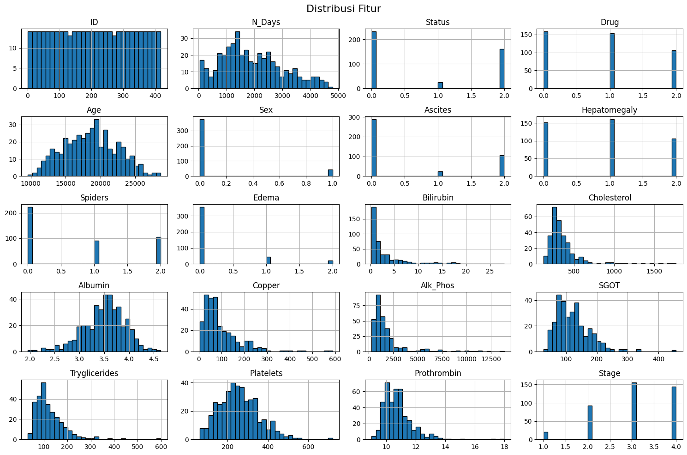

UTS#
Data Undestanding#
1.Pengumpulan Data#
import pandas as pd
df = pd.read_csv('cirrhosis.csv')
df.head()
| ID | N_Days | Status | Drug | Age | Sex | Ascites | Hepatomegaly | Spiders | Edema | Bilirubin | Cholesterol | Albumin | Copper | Alk_Phos | SGOT | Tryglicerides | Platelets | Prothrombin | Stage | |
|---|---|---|---|---|---|---|---|---|---|---|---|---|---|---|---|---|---|---|---|---|
| 0 | 1 | 400 | D | D-penicillamine | 21464 | F | Y | Y | Y | Y | 14.5 | 261.0 | 2.60 | 156.0 | 1718.0 | 137.95 | 172.0 | 190.0 | 12.2 | 4.0 |
| 1 | 2 | 4500 | C | D-penicillamine | 20617 | F | N | Y | Y | N | 1.1 | 302.0 | 4.14 | 54.0 | 7394.8 | 113.52 | 88.0 | 221.0 | 10.6 | 3.0 |
| 2 | 3 | 1012 | D | D-penicillamine | 25594 | M | N | N | N | S | 1.4 | 176.0 | 3.48 | 210.0 | 516.0 | 96.10 | 55.0 | 151.0 | 12.0 | 4.0 |
| 3 | 4 | 1925 | D | D-penicillamine | 19994 | F | N | Y | Y | S | 1.8 | 244.0 | 2.54 | 64.0 | 6121.8 | 60.63 | 92.0 | 183.0 | 10.3 | 4.0 |
| 4 | 5 | 1504 | CL | Placebo | 13918 | F | N | Y | Y | N | 3.4 | 279.0 | 3.53 | 143.0 | 671.0 | 113.15 | 72.0 | 136.0 | 10.9 | 3.0 |
2.Sampling#
# Ukuran data
print(f"Jumlah total data: {len(df)}")
# Ambil sampel acak 10%
df_sample = df.sample(frac=0.1, random_state=42)
df_sample.head()
Jumlah total data: 418
| ID | N_Days | Status | Drug | Age | Sex | Ascites | Hepatomegaly | Spiders | Edema | Bilirubin | Cholesterol | Albumin | Copper | Alk_Phos | SGOT | Tryglicerides | Platelets | Prothrombin | Stage | |
|---|---|---|---|---|---|---|---|---|---|---|---|---|---|---|---|---|---|---|---|---|
| 321 | 322 | 2011 | D | NaN | 23376 | F | NaN | NaN | NaN | N | 1.1 | NaN | 3.69 | NaN | NaN | NaN | NaN | 139.0 | 10.5 | NaN |
| 324 | 325 | 4795 | C | NaN | 12419 | F | NaN | NaN | NaN | N | 1.8 | NaN | 3.24 | NaN | NaN | NaN | NaN | NaN | 18.0 | 2.0 |
| 388 | 389 | 1581 | C | NaN | 24472 | F | NaN | NaN | NaN | N | 0.7 | NaN | 3.06 | NaN | NaN | NaN | NaN | 165.0 | 10.0 | 4.0 |
| 56 | 57 | 3282 | D | D-penicillamine | 19567 | F | N | Y | N | S | 2.3 | 260.0 | 3.18 | 231.0 | 11320.2 | 105.78 | 94.0 | 216.0 | 12.4 | 3.0 |
| 153 | 154 | 140 | D | D-penicillamine | 25340 | M | N | N | Y | Y | 2.4 | 168.0 | 2.56 | 225.0 | 1056.0 | 120.90 | 75.0 | 108.0 | 14.1 | 3.0 |
3.Profiling Data#
3.1
import seaborn as sns
import matplotlib.pyplot as plt
# Ambil kolom numerik aja
numeric_cols = df.select_dtypes(include='number').columns
plt.figure(figsize=(16, 8))
df[numeric_cols].boxplot(rot=90)
plt.title("Box Plot - Deteksi Outlier")
plt.grid(True)
plt.tight_layout()
plt.show()
plt.figure(figsize=(8, 6))
sns.scatterplot(x=X_cleaned['Bilirubin'], y=X_cleaned['Albumin'], hue=y_cleaned)
plt.title("Scatter Plot - Bilirubin vs Albumin")
plt.xlabel("Bilirubin")
plt.ylabel("Albumin")
plt.grid(True)
plt.show()
---------------------------------------------------------------------------
NameError Traceback (most recent call last)
Cell In[4], line 2
1 plt.figure(figsize=(8, 6))
----> 2 sns.scatterplot(x=X_cleaned['Bilirubin'], y=X_cleaned['Albumin'], hue=y_cleaned)
3 plt.title("Scatter Plot - Bilirubin vs Albumin")
4 plt.xlabel("Bilirubin")
NameError: name 'X_cleaned' is not defined
<Figure size 800x600 with 0 Axes>
# Info data
df.info()
# Statistik deskriptif
df.describe(include='all')
# Cek missing values
df.isnull().sum()
<class 'pandas.core.frame.DataFrame'>
RangeIndex: 418 entries, 0 to 417
Data columns (total 20 columns):
# Column Non-Null Count Dtype
--- ------ -------------- -----
0 ID 418 non-null int64
1 N_Days 418 non-null int64
2 Status 418 non-null object
3 Drug 312 non-null object
4 Age 418 non-null int64
5 Sex 418 non-null object
6 Ascites 312 non-null object
7 Hepatomegaly 312 non-null object
8 Spiders 312 non-null object
9 Edema 418 non-null object
10 Bilirubin 418 non-null float64
11 Cholesterol 284 non-null float64
12 Albumin 418 non-null float64
13 Copper 310 non-null float64
14 Alk_Phos 312 non-null float64
15 SGOT 312 non-null float64
16 Tryglicerides 282 non-null float64
17 Platelets 407 non-null float64
18 Prothrombin 416 non-null float64
19 Stage 412 non-null float64
dtypes: float64(10), int64(3), object(7)
memory usage: 65.4+ KB
ID 0
N_Days 0
Status 0
Drug 106
Age 0
Sex 0
Ascites 106
Hepatomegaly 106
Spiders 106
Edema 0
Bilirubin 0
Cholesterol 134
Albumin 0
Copper 108
Alk_Phos 106
SGOT 106
Tryglicerides 136
Platelets 11
Prothrombin 2
Stage 6
dtype: int64
4.Korelasi dan Asosiasi#
import seaborn as sns
import matplotlib.pyplot as plt
# Label encoding untuk korelasi numerik
from sklearn.preprocessing import LabelEncoder
df_encoded = df.copy()
for col in df_encoded.select_dtypes(include='object').columns:
df_encoded[col] = LabelEncoder().fit_transform(df_encoded[col].astype(str))
# Korelasi
plt.figure(figsize=(12,10))
sns.heatmap(df_encoded.corr(), annot=True, cmap='coolwarm')
plt.title('Matriks Korelasi')
plt.show()
5.Ekplorasi data#
# Histogram fitur numerik
df_encoded.hist(figsize=(15, 10), bins=30, edgecolor='black')
plt.suptitle("Distribusi Fitur", fontsize=16)
plt.tight_layout()
plt.show()

6.Identifikasi Masalah#
# Cek duplikat
print("Jumlah duplikat:", df.duplicated().sum())
# Cek missing value per kolom
print("\nMissing values per kolom:\n", df.isnull().sum())
# Cek jumlah kategori (untuk imbalance class)
print("\nDistribusi Target (Status):\n", df['Status'].value_counts())
Jumlah duplikat: 0
Missing values per kolom:
ID 0
N_Days 0
Status 0
Drug 106
Age 0
Sex 0
Ascites 106
Hepatomegaly 106
Spiders 106
Edema 0
Bilirubin 0
Cholesterol 134
Albumin 0
Copper 108
Alk_Phos 106
SGOT 106
Tryglicerides 136
Platelets 11
Prothrombin 2
Stage 6
dtype: int64
Distribusi Target (Status):
Status
C 232
D 161
CL 25
Name: count, dtype: int64
7.Validasi Data#
# Validasi tipe data dan range nilai
print("\nTipe data setiap kolom:")
print(df.dtypes)
# Contoh range usia (valid?)
print("\nRentang nilai usia:", df['Age'].min(), "sampai", df['Age'].max())
Tipe data setiap kolom:
ID int64
N_Days int64
Status object
Drug object
Age int64
Sex object
Ascites object
Hepatomegaly object
Spiders object
Edema object
Bilirubin float64
Cholesterol float64
Albumin float64
Copper float64
Alk_Phos float64
SGOT float64
Tryglicerides float64
Platelets float64
Prothrombin float64
Stage float64
dtype: object
Rentang nilai usia: 9598 sampai 28650
Pre Processing#
1.Menangani Missing Values#
from sklearn.impute import SimpleImputer
# Lakukan imputasi rata-rata untuk kolom numerik
imputer = SimpleImputer(strategy='mean')
df_imputed = pd.DataFrame(imputer.fit_transform(df_encoded), columns=df_encoded.columns)
# Cek lagi missing value
print("Sisa missing values setelah imputasi:\n", df_imputed.isnull().sum().sum())
Sisa missing values setelah imputasi:
0
2.Normalisasi Data#
from sklearn.preprocessing import StandardScaler
# Simpan dulu kolom target
y = df_imputed['Status']
X = df_imputed.drop(columns=['Status'])
# Normalisasi fitur
scaler = StandardScaler()
X_scaled = pd.DataFrame(scaler.fit_transform(X), columns=X.columns)
3.Deteksi outlier#
import numpy as np
from sklearn.neighbors import LocalOutlierFactor
# Terapkan LOF
lof = LocalOutlierFactor(n_neighbors=20)
y_lof = lof.fit_predict(X_scaled)
lof_scores = -lof.negative_outlier_factor_
# Tambahkan kolom skor LOF dan label outlier
X_scaled['LOF_Score'] = lof_scores
X_scaled['Outlier'] = (y_lof == -1).astype(int)
# Visualisasi
import matplotlib.pyplot as plt
plt.figure(figsize=(10, 6))
plt.scatter(X_scaled.index, X_scaled['LOF_Score'], c=X_scaled['Outlier'], cmap='coolwarm')
plt.axhline(y=np.percentile(lof_scores, 95), color='green', linestyle='--', label='Threshold 95%')
plt.title("LOF Score dan Outlier")
plt.xlabel("Index")
plt.ylabel("LOF Score")
plt.legend()
plt.show()
4.Menghapus Outlier#
# Hapus outlier
X_cleaned = X_scaled[X_scaled['Outlier'] == 0].drop(columns=['LOF_Score', 'Outlier']).reset_index(drop=True)
y_cleaned = y[X_scaled['Outlier'] == 0].reset_index(drop=True)
print(f"Jumlah data setelah hapus outlier: {len(X_cleaned)}")
Jumlah data setelah hapus outlier: 404
3.Klasifikasi#
# 1. Import Library
import pandas as pd
import numpy as np
import seaborn as sns
import matplotlib.pyplot as plt
from sklearn.model_selection import train_test_split
from sklearn.preprocessing import LabelEncoder, StandardScaler
from sklearn.linear_model import LogisticRegression
from sklearn.tree import DecisionTreeClassifier
from sklearn.ensemble import RandomForestClassifier
from sklearn.metrics import accuracy_score, classification_report
import pandas as pd
df = pd.read_csv('cirrhosis.csv')
df.head()
| ID | N_Days | Status | Drug | Age | Sex | Ascites | Hepatomegaly | Spiders | Edema | Bilirubin | Cholesterol | Albumin | Copper | Alk_Phos | SGOT | Tryglicerides | Platelets | Prothrombin | Stage | |
|---|---|---|---|---|---|---|---|---|---|---|---|---|---|---|---|---|---|---|---|---|
| 0 | 1 | 400 | D | D-penicillamine | 21464 | F | Y | Y | Y | Y | 14.5 | 261.0 | 2.60 | 156.0 | 1718.0 | 137.95 | 172.0 | 190.0 | 12.2 | 4.0 |
| 1 | 2 | 4500 | C | D-penicillamine | 20617 | F | N | Y | Y | N | 1.1 | 302.0 | 4.14 | 54.0 | 7394.8 | 113.52 | 88.0 | 221.0 | 10.6 | 3.0 |
| 2 | 3 | 1012 | D | D-penicillamine | 25594 | M | N | N | N | S | 1.4 | 176.0 | 3.48 | 210.0 | 516.0 | 96.10 | 55.0 | 151.0 | 12.0 | 4.0 |
| 3 | 4 | 1925 | D | D-penicillamine | 19994 | F | N | Y | Y | S | 1.8 | 244.0 | 2.54 | 64.0 | 6121.8 | 60.63 | 92.0 | 183.0 | 10.3 | 4.0 |
| 4 | 5 | 1504 | CL | Placebo | 13918 | F | N | Y | Y | N | 3.4 | 279.0 | 3.53 | 143.0 | 671.0 | 113.15 | 72.0 | 136.0 | 10.9 | 3.0 |
# 3. Cek Data Awal
df.info()
df.describe()
<class 'pandas.core.frame.DataFrame'>
RangeIndex: 418 entries, 0 to 417
Data columns (total 20 columns):
# Column Non-Null Count Dtype
--- ------ -------------- -----
0 ID 418 non-null int64
1 N_Days 418 non-null int64
2 Status 418 non-null object
3 Drug 312 non-null object
4 Age 418 non-null int64
5 Sex 418 non-null object
6 Ascites 312 non-null object
7 Hepatomegaly 312 non-null object
8 Spiders 312 non-null object
9 Edema 418 non-null object
10 Bilirubin 418 non-null float64
11 Cholesterol 284 non-null float64
12 Albumin 418 non-null float64
13 Copper 310 non-null float64
14 Alk_Phos 312 non-null float64
15 SGOT 312 non-null float64
16 Tryglicerides 282 non-null float64
17 Platelets 407 non-null float64
18 Prothrombin 416 non-null float64
19 Stage 412 non-null float64
dtypes: float64(10), int64(3), object(7)
memory usage: 65.4+ KB
| ID | N_Days | Age | Bilirubin | Cholesterol | Albumin | Copper | Alk_Phos | SGOT | Tryglicerides | Platelets | Prothrombin | Stage | |
|---|---|---|---|---|---|---|---|---|---|---|---|---|---|
| count | 418.000000 | 418.000000 | 418.000000 | 418.000000 | 284.000000 | 418.000000 | 310.000000 | 312.000000 | 312.000000 | 282.000000 | 407.000000 | 416.000000 | 412.000000 |
| mean | 209.500000 | 1917.782297 | 18533.351675 | 3.220813 | 369.510563 | 3.497440 | 97.648387 | 1982.655769 | 122.556346 | 124.702128 | 257.024570 | 10.731731 | 3.024272 |
| std | 120.810458 | 1104.672992 | 3815.845055 | 4.407506 | 231.944545 | 0.424972 | 85.613920 | 2140.388824 | 56.699525 | 65.148639 | 98.325585 | 1.022000 | 0.882042 |
| min | 1.000000 | 41.000000 | 9598.000000 | 0.300000 | 120.000000 | 1.960000 | 4.000000 | 289.000000 | 26.350000 | 33.000000 | 62.000000 | 9.000000 | 1.000000 |
| 25% | 105.250000 | 1092.750000 | 15644.500000 | 0.800000 | 249.500000 | 3.242500 | 41.250000 | 871.500000 | 80.600000 | 84.250000 | 188.500000 | 10.000000 | 2.000000 |
| 50% | 209.500000 | 1730.000000 | 18628.000000 | 1.400000 | 309.500000 | 3.530000 | 73.000000 | 1259.000000 | 114.700000 | 108.000000 | 251.000000 | 10.600000 | 3.000000 |
| 75% | 313.750000 | 2613.500000 | 21272.500000 | 3.400000 | 400.000000 | 3.770000 | 123.000000 | 1980.000000 | 151.900000 | 151.000000 | 318.000000 | 11.100000 | 4.000000 |
| max | 418.000000 | 4795.000000 | 28650.000000 | 28.000000 | 1775.000000 | 4.640000 | 588.000000 | 13862.400000 | 457.250000 | 598.000000 | 721.000000 | 18.000000 | 4.000000 |
# 6. Split Data
from sklearn.model_selection import train_test_split
X = df.drop(columns=["Status"])
y = df["Status"]
X_train, X_test, y_train, y_test = train_test_split(X, y, test_size=0.2, random_state=42)
# Pastikan target y dalam bentuk numerik
from sklearn.preprocessing import LabelEncoder
le = LabelEncoder()
y = le.fit_transform(df["Status"]) # encode target
# Split data bersih (tanpa outlier)
from sklearn.model_selection import train_test_split
from sklearn.metrics import accuracy_score, classification_report
from sklearn.linear_model import LogisticRegression
from sklearn.tree import DecisionTreeClassifier
from sklearn.ensemble import RandomForestClassifier
from sklearn.neighbors import KNeighborsClassifier
X_train, X_test, y_train, y_test = train_test_split(X_cleaned, y_cleaned, test_size=0.2, random_state=42)
# Definisi model
models = {
"Logistic Regression": LogisticRegression(max_iter=1000),
"Decision Tree": DecisionTreeClassifier(),
}
# Training & Evaluasi
for name, model in models.items():
model.fit(X_train, y_train)
y_pred = model.predict(X_test)
acc = accuracy_score(y_test, y_pred)
print(f" Model: {name}")
print(f" Akurasi: {acc:.2f}")
print(" Classification Report:")
print(classification_report(y_test, y_pred))
print("="*50)
from sklearn.metrics import classification_report
print(classification_report(y_test, y_pred, zero_division=0))
Model: Logistic Regression
Akurasi: 0.84
Classification Report:
precision recall f1-score support
0.0 0.87 0.91 0.89 45
1.0 0.25 0.25 0.25 4
2.0 0.87 0.81 0.84 32
accuracy 0.84 81
macro avg 0.66 0.66 0.66 81
weighted avg 0.84 0.84 0.84 81
==================================================
Model: Decision Tree
Akurasi: 0.64
Classification Report:
precision recall f1-score support
0.0 0.72 0.69 0.70 45
1.0 0.20 0.25 0.22 4
2.0 0.61 0.62 0.62 32
accuracy 0.64 81
macro avg 0.51 0.52 0.51 81
weighted avg 0.65 0.64 0.65 81
==================================================
precision recall f1-score support
0.0 0.72 0.69 0.70 45
1.0 0.20 0.25 0.22 4
2.0 0.61 0.62 0.62 32
accuracy 0.64 81
macro avg 0.51 0.52 0.51 81
weighted avg 0.65 0.64 0.65 81
# Import library yang dibutuhin
from sklearn.model_selection import train_test_split
from sklearn.neighbors import KNeighborsClassifier
from sklearn.metrics import accuracy_score, classification_report
# Split data hasil preprocessing & tanpa outlier
X_train, X_test, y_train, y_test = train_test_split(X_cleaned, y_cleaned, test_size=0.2, random_state=42)
# Inisialisasi model KNN
knn_model = KNeighborsClassifier(n_neighbors=5) # kamu bisa coba 3, 7, 9 juga nanti
# Training model
knn_model.fit(X_train, y_train)
# Prediksi data test
y_pred = knn_model.predict(X_test)
# Evaluasi performa model
acc = accuracy_score(y_test, y_pred)
print("Model: K-Nearest Neighbors (KNN)")
print(f"Akurasi: {acc:.2f}")
print("Classification Report:")
print(classification_report(y_test, y_pred, zero_division=0))
Model: K-Nearest Neighbors (KNN)
Akurasi: 0.80
Classification Report:
precision recall f1-score support
0.0 0.78 0.93 0.85 45
1.0 0.00 0.00 0.00 4
2.0 0.85 0.72 0.78 32
accuracy 0.80 81
macro avg 0.54 0.55 0.54 81
weighted avg 0.77 0.80 0.78 81
# Import library
from sklearn.ensemble import RandomForestClassifier
from sklearn.model_selection import train_test_split
from sklearn.metrics import accuracy_score, classification_report
# Split data hasil preprocessing & tanpa outlier
X_train, X_test, y_train, y_test = train_test_split(X_cleaned, y_cleaned, test_size=0.2, random_state=42)
# Inisialisasi model Random Forest
rf_model = RandomForestClassifier(n_estimators=100, random_state=42)
# Training model
rf_model.fit(X_train, y_train)
# Prediksi data test
y_pred = rf_model.predict(X_test)
# Evaluasi performa model
acc = accuracy_score(y_test, y_pred)
print(" Model: Random Forest")
print(f" Akurasi: {acc:.2f}")
print(" Classification Report:")
print(classification_report(y_test, y_pred, zero_division=0))
Model: Random Forest
Akurasi: 0.83
Classification Report:
precision recall f1-score support
0.0 0.82 0.91 0.86 45
1.0 0.00 0.00 0.00 4
2.0 0.84 0.81 0.83 32
accuracy 0.83 81
macro avg 0.55 0.57 0.56 81
weighted avg 0.79 0.83 0.81 81
# Import library
from sklearn.ensemble import RandomForestClassifier
from sklearn.model_selection import train_test_split
from sklearn.metrics import accuracy_score, classification_report
# Split data hasil preprocessing & tanpa outlier
X_train, X_test, y_train, y_test = train_test_split(X_cleaned, y_cleaned, test_size=0.2, random_state=42)
# Inisialisasi model Random Forest
rf_model = RandomForestClassifier(n_estimators=100, random_state=42)
# Training model
rf_model.fit(X_train, y_train)
# Prediksi data test
y_pred = rf_model.predict(X_test)
# Evaluasi performa model
acc = accuracy_score(y_test, y_pred)
print(" Model: Random Forest")
print(f" Akurasi: {acc:.2f}")
print(" Classification Report:")
print(classification_report(y_test, y_pred, zero_division=0))
Model: Random Forest
Akurasi: 0.83
Classification Report:
precision recall f1-score support
0.0 0.82 0.91 0.86 45
1.0 0.00 0.00 0.00 4
2.0 0.84 0.81 0.83 32
accuracy 0.83 81
macro avg 0.55 0.57 0.56 81
weighted avg 0.79 0.83 0.81 81